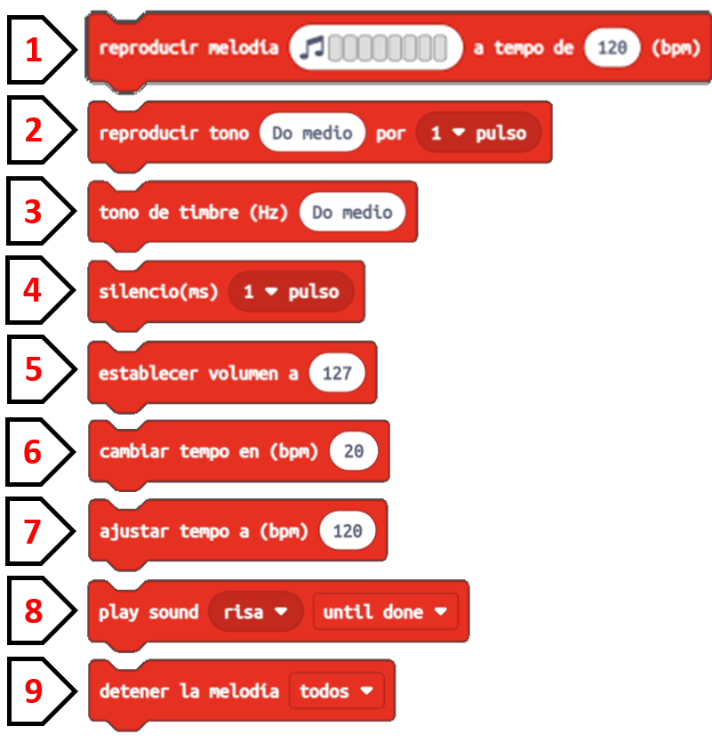
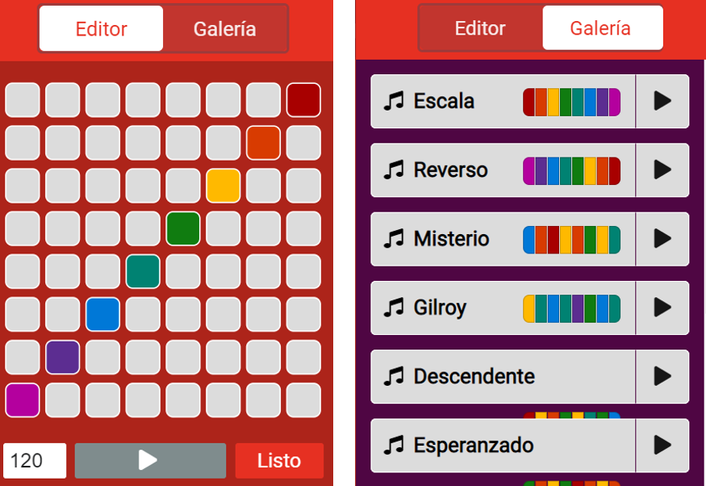
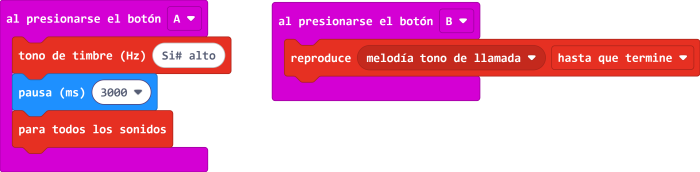
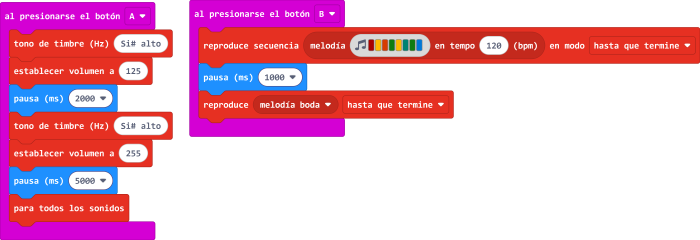

Bloques Musicales
La música, al igual que todos los sonidos que escuchamos, causa un cambio en nuestro estado de ánimo. Hay algunos tipos de música que nos ponen tristes o melancólicos, los hay que nos alegran y animan, otros nos tranquilizan...Podemos utilizar la música para que los demás se sientan mejor.
En el entorno de programación de MakeCode tienes bloques que puedes utilizar para causar todos estos efectos y mejorar el estado de ánimo de tus compañeras y compañeros. Te los muestro y te digo para qué pueden serte útiles:
1. Reproducir melodía: Puedes elegir entre editar tu melodía (imagen de la izquierda) o seleccionar una melodía de la galería (imagen de la derecha).
Si decides editarla, puedes componer el tipo de melodía que necesites: alegre, tranquila, emocionante, misteriosa... Dándole al play podrás ir comprobando cómo suena.
Si eliges alguna de la galería, fíjate en que ya están nombradas con temas que te interesan: misterio, esperanzado...
2. Reproducir tono: Reproduce una nota musical durante un tiempo (pulso).
3. Tono de timbre: Se utiliza para jugar con los sonidos graves y agudos.
4. Silencio: Es un bloque imprescindible si queremos establecer silencios o pausas entre unos sonidos y otros.
5. Establecer volumen a: Establece el nivel de volumen en el que queremos reproducir.
6. Cambiar tempo en: Con este bloque cambiamos, incrementamos o disminuimos la velocidad de reproducción de un sonido o melodía.
7. Ajustar tempo a: Sirve para establecer un tempo o velocidad determinada de reproducción.
8. Play sound...: Reproduce un sonido hasta que termine. Se puede utilizar como música o sonido de fondo. Tenemos muchos sonidos interesantes que nos pueden servir en este proyecto: risa, destello, bostezo...
9. Detener la melodía: Con este bloque se detiene el sonido o melodía que se estaba reproduciendo.
Ejemplo 1
Ingresa al makecode y programa los bloques tal cual aparecen en la siguiente imagen. Pruébalo en el simulador del microbit para interactuar con mayor detalle y recuerda que si lo pruebas en la PC deberás tener unos audífonos para escuchar los sonidos o melodías.

Ejemplo 2
Ingresa al makecode y programa los bloques tal cual aparecen en la siguiente imagen. Pruébalo en el simulador del microbit para interactuar con mayor detalle y recuerda que si lo pruebas en la PC deberás tener unos audífonos para escuchar los sonidos o melodías.
